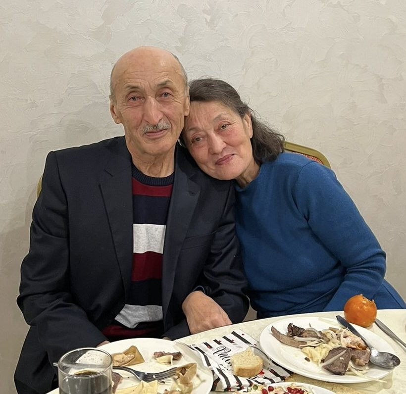
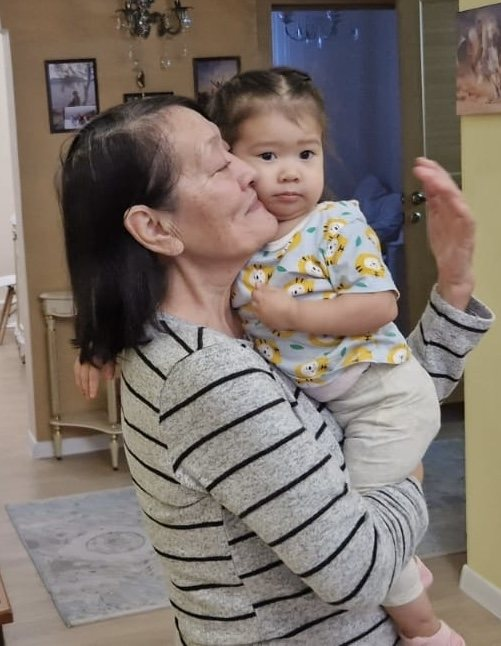
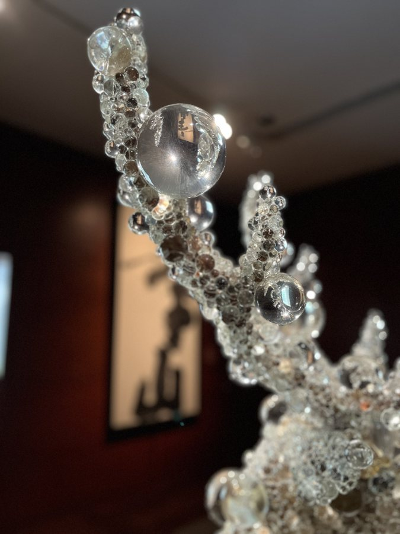
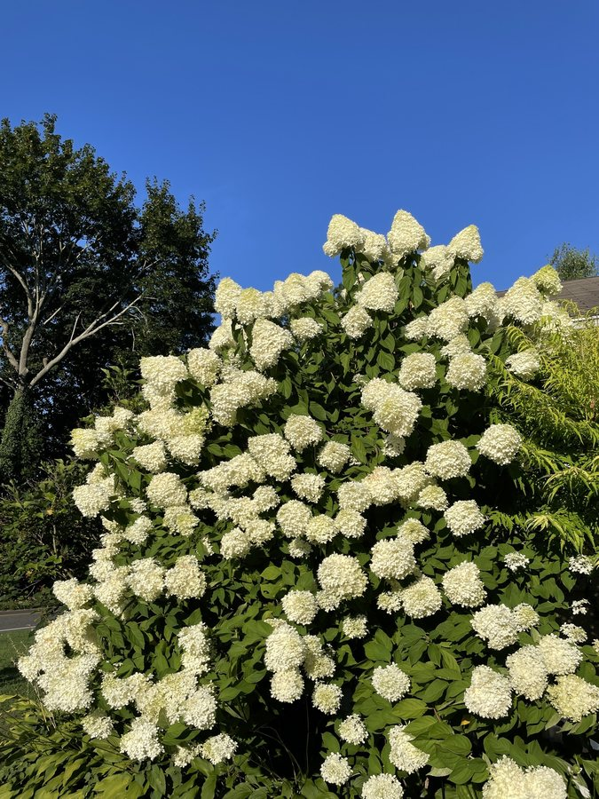
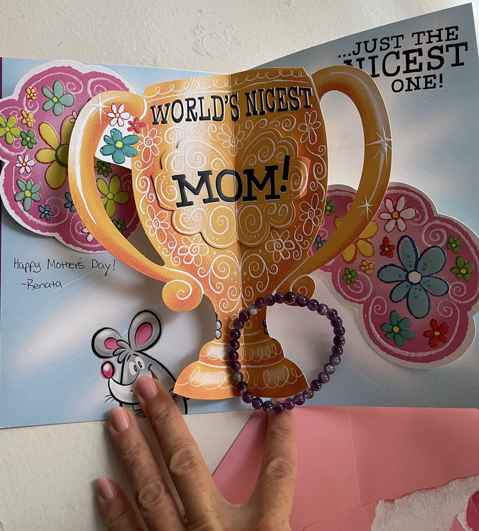

writing · The Wind Girl · a chapter
🤍 About my Mother

a long time ago, but like yesterday
a warm memory under the lilies
You wrote to your daughter. You wrote to yourself. You wrote about your father. But about her, you stay silent.
— Because my mother holds a special place. It's hard to begin. Today I'm writing to her.
At home, we gently call my Mom Apashka 🤍

keeper of our family memories
What do you remember about her first?
— Her care. Mom, you cared the way you breathed: without waiting to be asked, and without knowing any other way.

Mom and Dad
Dad loves to sing, Mom loves to dance
Our home was never empty, and you always found a place, a plate and a warm word for everyone. I grew up inside that care, as if under a blanket. But it was crowded under there. You covered so many people that there wasn't always enough of you left for me when I needed you most.
You found what we didn't have: a coin for a Snickers, a suit for graduation, a ticket to my new life.

that's how you shine
dancing with all of us
From your father you learned that love can be joyful. What did she teach you?
— Care. It isn't asked for or chosen. It simply radiates. That's how you shone.

always holding someone
The only one you couldn't cover was yourself. You were so used to caring for others that caring for yourself felt like something foreign.
She gave everything. Sometimes more than she had.
— I know. And it makes me sad.

in another life
I saw you in another life, where your home most often holds just the five of you: three sisters, your mom and your dad. Almost every evening Dad sings and Mom dances. And you're all laughing.

you get cold too
You get cold too. You need a blanket too, as much as anyone. To love is not to disappear. Self-sacrifice is cruelty to yourself.
a cloud blanket for Mom
Wind, bring her my warmth. Whisper to her that I'm okay.
I will. And I'll wrap her in my warmest cloud blanket.

clouds for her blanket

and now, from my daughter 💜
Mom taught me care. Care that always shines 💛
from my novel The Wind Girl, in progress
if this touched you, leave a heart 🤍
tap as many times as you like
thank you, your note reached me 🤍